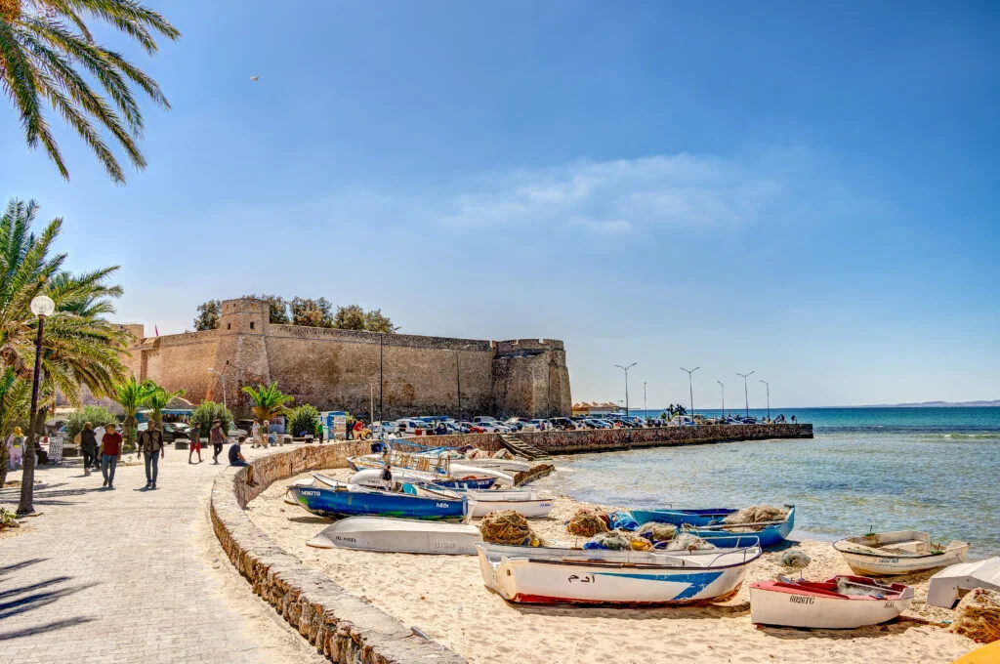
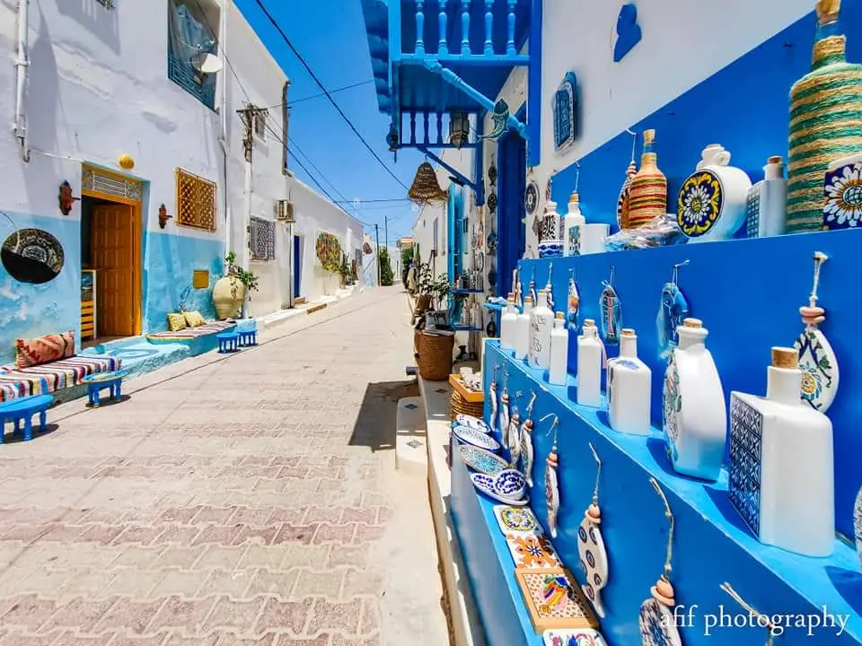
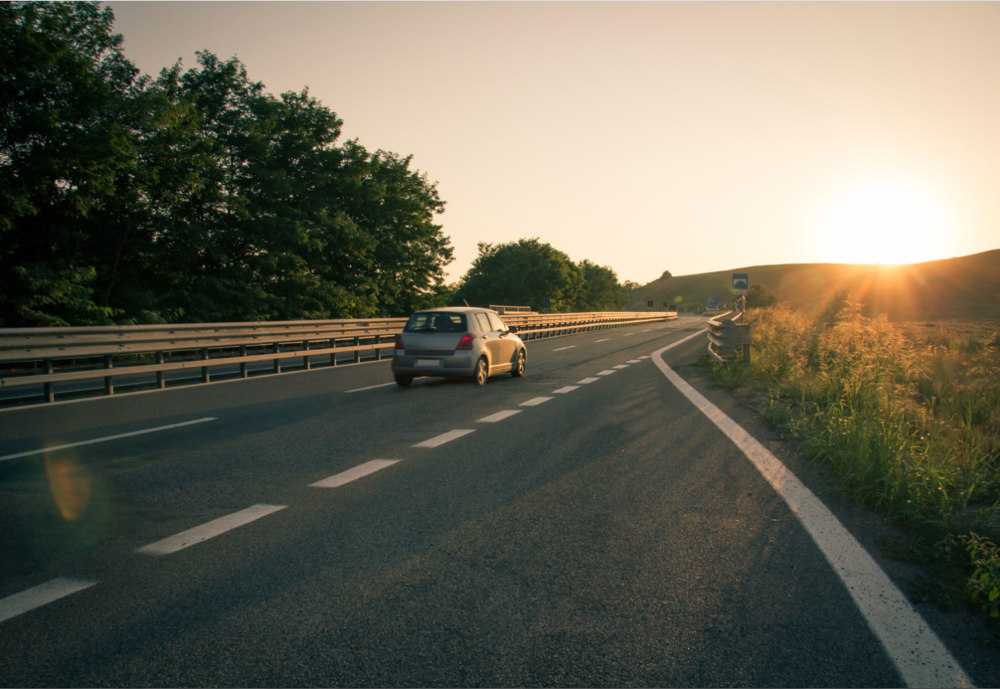

Avec Tariqi, le covoiturage devient simple et sécurisé en Tunisie.
Où voulez-vous aller ?
Les routes les plus empruntées par nos voyageurs.


Simple par définition
Entrez votre ville de départ, votre destination et la date souhaitée. Trouvez un trajet qui vous convient en quelques secondes.
Choisissez votre conducteur, réservez votre place et recevez la confirmation directement sur votre téléphone.
Retrouvez votre conducteur au point de rendez-vous et profitez du trajet. Simple, humain, économique.
Vous conduisez déjà ?
Publiez vos trajets sur Tariqi, remplissez vos places libres et couvrez vos frais d'essence. Des milliers de passagers vous attendent sur les routes de Tunisie.
